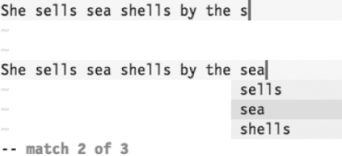
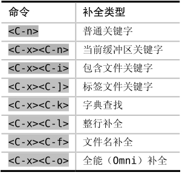

）。这样一来，“she”仍旧会被加到补全列表中，不过会把开头的字母改为小写“s”。
）。这样一来，“she”仍旧会被加到补全列表中，不过会把开头的字母改为小写“s”。 技巧111结识Vim的关键字自动补全
当关键字自动补全功能被激活后，Vim会试图猜测我们正在输入的单词，从而为我们省去了手动输入完整单词的麻烦。
Vim的自动补全可以在插入模式下被触发。当此功能被调用时，Vim首先会根据当前编辑会话内所有缓冲区的内容建立一份补全列表，然后再检测光标左侧的字符，看能否找到单词的一部分。如果找到的话，会用这个未完成的单词对补全列表进行过滤，所有不是以它开头的内容都将被过滤掉。最终的补全列表将以菜单形式出现，供我们选择。
下图展示了两组屏幕截图，分别描述了触发Vim关键词自动补全前后的情况：

在本例中，字母“s”被用于过滤补全列表，然后为我们提供了3项选择：“sells”、“sea”以及“shells”。如果你奇怪为什么“She”没有被列出来，请参见自动补全与大小写敏感性的说明。
自动补全与大小写敏感性
当‘ignorecase’选项被启用后，无论是大写字母还是小写字母，Vim的查找命令都对它们一视同仁（正如技巧72所讨论的那样），但这样做也有副作用，即在自动补全时也会忽略大小写。
在以上介绍的“She sells sea shells”一例中，由于单词“She”以大写字母“S”开头，因此没有出现在补全列表中。然而，一旦‘ignorecase ’选项被启用，以大写S开头的“She”将会出现在补全列表中。鉴于我们已经输入了小写字母“s”，因此，“She”的出现对我们毫无用处。
我们可以通过启用‘infercase’选项来修正这一行为（参见:h'infercase'）。这样一来，“she”仍旧会被加到补全列表中，不过会把开头的字母改为小写“s”。
触发自动补全
通过<C-p>与<C-n>这两个组合键，我们不仅可以在插入模式下触发Vim的自动补全，而且还可以用它们在补全列表中反向或正向选择。
<C-p>与<C-n>命令均会调用普通关键字自动补全。除此之外，还有其他几种自动补全的方式，所有这些命令均以组合键<C-x>作为起始操作。在本章中，我们将对表19-1所列的补全方式进行深入讨论（你可以通过:h ins-completion 找到完整的列表）。
表19-1 触发Vim自动补全的方法总结

如果你在“She sells sea shells”一例中使用<C-x><C-n>的话，应该会看到与上图相同的补全列表。但是<C-n>可能会产生更多的补全建议，因为除了当前缓冲区以外，它还用其他来源来填充补全列表。在技巧113中，我们将深入研究普通关键字的补全列表是如何生成的。
不论触发了哪种形式的自动补全，与补全建议菜单进行交互的命令都是通用的。我们将在下一节就这些命令进行深入探讨。